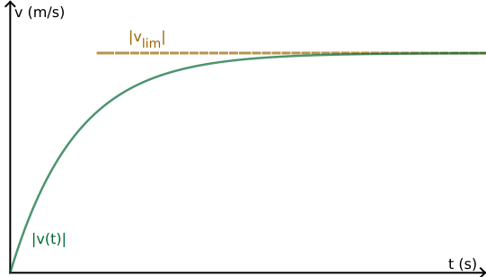

BTS Équations différentielles
Généralités
Notion d'équation différentielle
- On sait qu'un objet en chute libre pour lequel les frottements à l'air sont négligeables chute avec une accélération constante, égale, sur Terre, à
\(g = 9,81 \approx 10\) m/s2.
Si l'objet est lâché sans vitesse initiale, quelle est sa vitesse au bout d'une seconde ? De deux ? De dix secondes ?
- Même question si on le lance vers le bas avec une vitesse de 5 m/s.
- Rappel : La dérivée (par rapport au temps \(t\)) de la position \(x(t)\) est la vitesse (instantanée) \(v(t)\). L'accélération \(a(t)\) est la dérivée de la vitesse par rapport à \(t\), et donc aussi la dérivée seconde de la position par rapport au temps.
On a \(a(t)=10\) ; Donner \(v(t)\) et \(x(t)\), sachant que \(v(0)=0\) m/s et \(x(0) = 300\) m.

Si l'objet est soumis à des frottements (linéaires : proportionnels à la vitesse acquise par l'objet durant sa chute) de coefficients \(K\), sa vitesse vérifie alors \(a(t)+Kv(t)=g\) ; le problème étant que comme \(a(t)=v'(t)\), on obtient :
\(v'(t)+Kv(t)=g\)
Il semble alors difficile de déterminer directement \(v(t)\) car il n'est pas possible de l'isoler de sa dérivée. Le but de ce cours est de mettre en place une méthode permettant de déterminer l'expression de cette vitesse, par exemple.
Ci-contre, le graphe représente l'évolution de la vitesse (en valeur absolue), au cours du temps. Ainsi, \(v_{\lim}\) est appelée «vélocité terminale» ou «vitesse terminale» : les frottements conduisent à l'apparition d'une vitesse limite lors de la chute.
Définition
Une
équation différentielle est une équation dont l'inconnue est une fonction ; l'équation est dite différentielle car elle fait apparaître un lien entre les dérivées de la fonction.
- 1er ordre : \((E_1)~:~~ay'+by=d(t)\)
- 2nd ordre : \((E_2)~:~~ay''+by'+cy=d(t)\)
avec \(a\neq0\), \(b\), \(c\) constantes réelles et \(d\) fonction de \(t\), que l'on appelle «
second membre» (de l'équation, car noté à droite du \(=\)).
Réécrire cette équation différentielle sous une forme ordonnée (c'est à dire de la même manière que dans la définition précédente) : \((E_1)~:~~ 7y(t) - y'(t) + 3t^2 = 2y''(t)\)
Préciser son ordre, quelle est la fonction inconnue, de quelle variable, les trois coefficients réels ainsi que son second membre.
Notion de solution (particulière)
Une fonction vérifiant une équation différentielle est appelée solution particulière de cette équation différentielle.
Une équation différentielle a une infinité de solutions (particulières).
On doit calculer le membre de gauche, et simplifier, pour montrer que l'on retombe sur le membre de droite ; pour ce faire :
- On calcule \(f'(t)\) (et \(f''(t)\) dans le cas d'une équation du second ordre) ;
- on réinjecte \(f(t)\) et ses dérivées dans l'équation ;
- on simplifie pour vérifier que l'égalité de l'équation est bien vérifiée.
Choisir une valeur au hasard pour \(a\) (par exemple \(a=2\) ou \(-10{,}5\)) et vérifier que \(f(t)=a\rm{e}^{-2x}+4\) est une solution particulière de \((E)~:~~y'+2y=8\).
★ calculatoire.
Vérifier que \(f(t)=\rm{e}^{-t}+3\) et \(g(t)=t\rm{e}^{-t}+3\) sont deux solutions particulières de \((E)~:~~y''+2y'+y=3\).
Une équation différentielle admet la plupart du temps au moins une solution particulière \(f(t)\) de même forme que son second membre ; ainsi, si le second membre est une constante, on pourra poser \(f(t)=A\) (\(A\) cte); si le second membre est un polynôme de degré 2, on poser \(f(t)=At^2+Bt+C\) (\(A,B,C\) ctes) ; si le second membre est \(-10\rm{e}^{-2t}\), on posera \(f(t)=A\rm{e}^{-2t}\) (\(A\) cte)... La plupart du temps, la forme de \(f(t)\) est directement donnée par l'énoncé du problème.
(avancée) ; Déterminer une solution particulière \(f(t)\)
- On pose \(f(t)=\) de la même forme que le second membre, avec des constantes \(A\), \(B\),... ; par exemple :
- Si le second membre est un polynôme, par exemple \(t^2\), on recherche la solution sous la forme d'un polynôme de même degré : \(At^2+Bt+C\) ;
- Si le second membre est \(\rm{e}^{3t}\), on recherche la solution sous la forme \(A\rm{e}^{3t}\) ;
- Si le second membre est \(\cos(3t)\), on recherche la solution sous la forme \(A\cos(3t)+B\sin(3t)\) ;
- Bref : la solution doit être dans la même «famille» que le second membre (et cette «famille» est «stable» par dérivation : une fonction de cette famille y reste si on la dérive). Ensuite on procède de la même manière qu'à la méthode précédente :
- on calcule \(f'(t)\) (et \(f''(t)\) si besoin) (qui vont dépendre des constantes utilisées) ;
- on réinjecte \(f(t)\) et ses dérivées dans l'équation ;
- on simplifie ;
- on détermine les conditions sur les constantes pour que l'égalité de l'équation soit bien vérifiée ;
- on remplace les constantes par les valeurs obtenues à l'étape précédente pour écrire l'expression définitive de \(f(t)\).
Trouver une solution particulière de \(y'-3y=1-t\) sous la forme \(f(t)=At+B\)
Notion de solution générale
Les équations différentielles ont une infinité de solutions ; pourtant, celles-ci ne diffèrent que d'une ou deux constantes multiplicatives. Il est ainsi possible d'écrire une formule donnant la forme de toutes les solutions d'une équation différentielle.
On appelle cette formule «solution générale» de l'équation différentielle.
\(f(t)=k\rm{e}^{-2x}+4\), où \(k\) est une constante pouvant prendre n'importe quelle valeur réelle, est la solution générale de \((E)~:~~y'+2y=8\).
Dans la solution générale, affecter une valeur réelle quelconque à \(k\) permet d'obtenir une solution particulière de l'équation différentielle étudiée.
Il existe une méthode permettant d'obtenir facilement ces solutions générales.
Méthode de résolution
Équation homogène
Pour transformer un équation différentielle en son
équation homogène associée (on dit aussi «sans second membre», celui-ci devant être égal à \(0\)), on ne conserve que les termes contenant \(y\), \(y'\) ou \(y''\) (avec leurs facteurs multiplicatifs).
- 1er ordre : \((E_1^*)~:~~ay'+by=0\)
- 2nd ordre : \((E_2^*)~:~~ay''+by'+cy=0\)
L'équation homogène associée est notée \((E^*)\) pour permettre de garder les indices s'il y a plusieurs équations, sinon notée \((E_0)\) parfois.
Équation caractéristique
C'est une équation numérique obtenue en remplaçant dans \((E^*)\) les symboles \(y\), \(y'\) et \(y''\) par \(1\), \(r\) et \(r^2\) : la puissance de \(r\) correspond à l'ordre de dérivation.
- 1er ordre : \((E_1^c)~:~~ar+b=0\)
- 2nd ordre : \((E_2^c)~:~~ar^2+br+c=0\)
Donner les équations homogènes et caractéristiques des équations différentielles suivantes :
- \((E_1)~:~~2y'+10y=10 \)
- \((E_2)~:~~2y'+10y=2\rm{e}^{-2t}\)
- \((E_3)~:~~y''+4y'+8y=4\)
Solutions générales d'une équation
homogène :
- 1er ordre : \((E^c)~:~~\) une solution \(r\), solution générale de \((E_1^*)\) : \(K\rm{e}^{rt}\).
- 2nd ordre : \((E^c)~:~~ar^2+br+c=0\) ; 3 cas selon \(\Delta=b^2-4ac\) :
- \(\Delta>0\) : \((E^c)\) a deux solutions \(r_1=\dfrac{-b-\sqrt{\Delta}}{2a}\) et \(r_2=\dfrac{-b+\sqrt{\Delta}}{2a}\) ;
solution générale de \((E_2^*)\) : \(K\rm{e}^{r_1t}+L\rm{e}^{r_2t}\).
- \(\Delta=0\) : \((E^c)\) a une solution \(r_0=\dfrac{-b}{2a}\) ;
solution générale de \((E_2^*)\) : \(K\rm{e}^{r_0t}+Lt\rm{e}^{r_0t}\).
- \(\Delta<0\) : \((E^c)\) a deux solutions \(r_1=\dfrac{-b-i\sqrt{\Delta}}{2a}\) et \(r_2=\dfrac{-b+i\sqrt{\Delta}}{2a}\), complexes conjuguées de la forme \(\alpha\pm i\omega\) (on choisit \(\omega>0\)) ;
solution générale de \((E_2^*)\) : \(K\rm{e}^{\alpha t}\cos(\omega t)+L\rm{e}^{\alpha t}\sin(\omega t)\).
\(K\) et \(L\) sont deux constantes ; leur affecter une valeur conduit à l' obtention d'une solution particulière ; en ce sens, les formules appelées «solutions générales» permettent de générer toutes les solutions particulières.
Donner les solutions générales des équations différentielles homogènes suivantes :
- \( (E_1^*)~:~~2y'+10y=0 \)
- \( (E_2^*)~:~~5y'+8y=0 \)
- \( (E_3^*)~:~~y''+4y'+8y=0\)
- \( (E_4^*)~:~~y''+\omega^2y=0 \) (\(\omega\) est une constante)
Résoudre une équation différentielle \((E)\) quelconque
utilise le principe de superposition :
- On recherche une solution particulière \(f(t)\) de \((E)\) ;
- on écrit \((E^*)\), l'équation homogène associée à \((E)\) ;
- on en déduit l'équation caractéristique \((E^c)\), que l'on résout ;
- on en déduit les solutions générales de \((E^*)\) ;
- on obtient les solutions générales de \((E)\) en ajoutant à une solution particulière de \((E)\), comme ici \(f(t)\), les solutions générales de \((E^*)\).
Donner les solutions générales des équations différentielles suivantes :
- \((E_1)~:~~2y'+10y=10\)
- \((E_2)~:~~5y'+8y=4 \)
- \((E_3)~:~~2y'+10y=34\)
- \((E_4)~:~~5y'+8y=20 \)
- \((E_5)~:~~2y'+10y=2\rm{e}^{-2t}\)
- \((E_6)~:~~y''+4y'+8y=4\)
Conditions initiales/particulières
une condition initiale revient à déterminer quelle solution particulière de l'équation différentielle vaut une valeur donnée \(y(0)\) à \(t=0\) (\(y'(0)\) est aussi donnée dans le cas du 2nd ordre). Si on se place en un autre instant \(t>0\), on parle de condition particulière
On recherche une (autre) solution particulière \(g\) de \((E)\) :
- en remplaçant dans la formule donnant les solutions générales de \((E)\) (2nd ordre : et dans sa dérivée) \(t\) par la valeur donnée (0 pour des conditions initiales et une valeur positive pour des conditions particulières)
- et en résolvant l'équation en \(k\) (2nd ordre : le système en \(k\) et \(l\)) obtenu(e).
-
Après avoir recherché une solution particulière de \((E_1)\) sous la forme \(f(t)=A\) constante, résoudre :
\( \left\{\begin{array}{l}
(E_1)~:~~2y'+10y=10 \\
~~~~~~~~~y(0)=4\\
\end{array}\right. \)
- Après avoir recherché une solution particulière de \((E_2)\) sous la forme \(f(t)=A\rm{e}^{-2t}\), résoudre :
\( \left\{\begin{array}{l}
(E_2)~:~~2y'+10y=2\rm{e}^{-2t} \\
~~~~~~~~~y(0)=4\\
\end{array}\right. \)
- Après avoir recherché une solution particulière de \((E_3)\) sous la forme \(f(t)=A\) constante, résoudre :
\( \left\{\begin{array}{l}
(E_3)~:~~y''+4y'+8y=4 \\
~~~~~~~~~y(0)=2\textrm{ et } y'(0)=-1\\
\end{array}\right. \)
ChampVecteurs
ChampVecteurs[ f(x,y) ]
Représente un champ de vecteurs pour l'équation différentielle \( \mathrm{\mathsf{\frac{dy}{dx}=f(x,y)}} \).
Attention la variable utilisée par GéoGebra est \(x\) et non \(t\)...
ChampVecteurs[x+2y] représente le champ de vecteurs pour \(y'(x)=x+y(x)\)
RésolEquaDiff
- Résolution numérique :
RésolEquaDiff[ f(x,y), x initial, y initial, x final, pas ] résout numériquement une équation différentielle d'ordre un : \(\mathrm{\mathsf{\frac{dy}{dx}=f(x,y)}}\)
à partir d'un point donné par ses coordonnées, avec un pas donné.
- Résolution formelle :
RésolEquaDiff[ f(x, y) ]
essaye de trouver la solution exacte de l'équation différentielle d'ordre un \(\mathrm{\mathsf{\frac{dy}{dx}(x)=f(x,y(x))}}\)
Reprendre l'exercice précédent à l'aide de Geogebra.
Problèmes
Un parachutiste saute d'une hauteur \(x(0)=8\,500\) m sans vitesse initiale et ouvre son parachute au bout de 120 s. Son poids \(\overrightarrow{P}=m\overrightarrow{g}\) est conditionné par l'accélération de pesanteur \(\overrightarrow{g}\), vers le bas, de norme 10 m/s2. On considère que le parachutiste subit les frottements linéaires de l'air de coefficients \(K_1=0{,}15\) lors de la chute libre puis \(K_2=10\) après l'ouverture du parachute.
Le principe fondamental de la dynamique Newtonienne conduit à : \((E)~:~~v'+K_{1|2}v=g\)
Résoudre l'équation différentielle \((E)\) et tracer les courbes de position, vitesse et accélération du parachutiste.
Lorsqu'une réaction chimique suit une loi de vitesse d’ordre 1, la concentration molaire \(\left[A\right]\) du réactif \(A\) diminue selon l’équation différentielle suivante : \(\dfrac{\textrm{d}\left[A\right](t)}{\textrm{d}t}+K\left[A\right](t)=0\)
Équation de la réaction modélisant la transformation chimique de synthèse du méthanal (formol) : CH3OH → H2CO + H2 ; \(K=2\) ; le temps est en minutes et [CH3OH]=0,30 mol/L.
Déterminer la concentration en fonction du temps.
Étudier l'équation différentielle vérifiée par un circuit série RL.